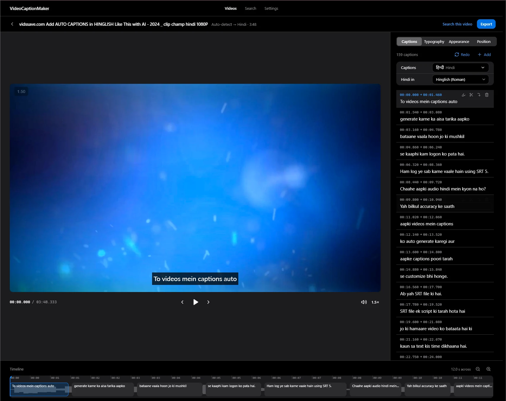
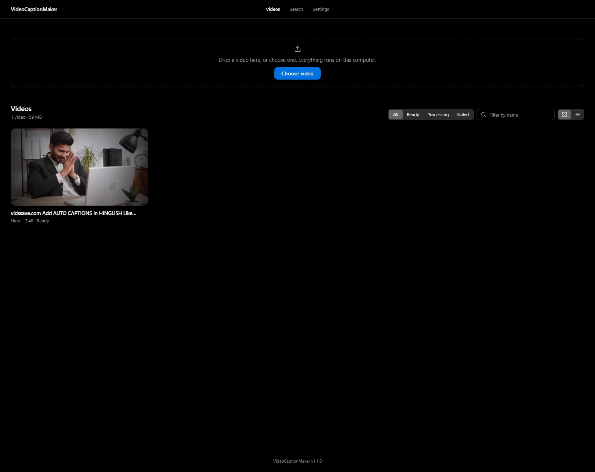
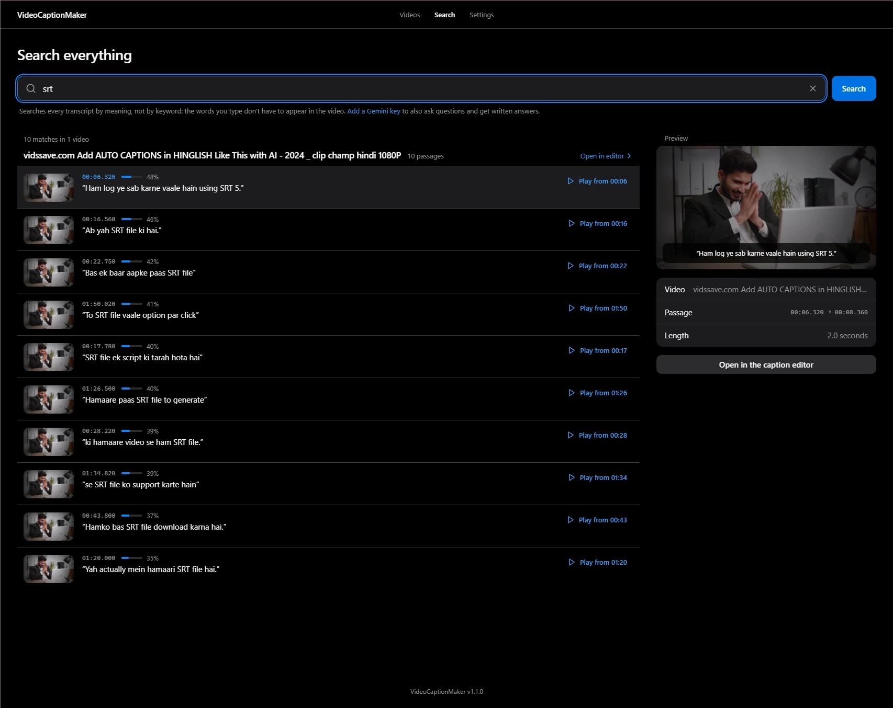
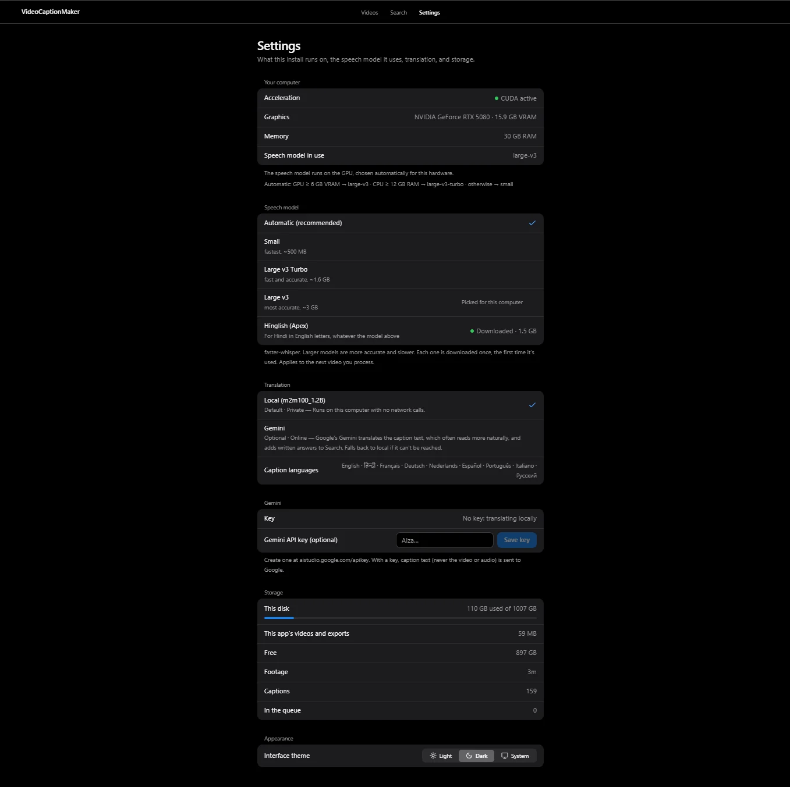

Private, offline AI captions for your videos
Upload a video, choose the caption language and export it with the captions burned in, or as subtitle files. Speech recognition and translation run on your own CPU or NVIDIA GPU: no account, no cloud service, and your video never leaves the machine.
Install with one command
irm https://github.com/Tanush1206/Video-Caption-Maker/releases/latest/download/install.ps1 | iex
curl -fsSL https://github.com/Tanush1206/Video-Caption-Maker/releases/latest/download/install.sh | bash
curl -fsSL https://github.com/Tanush1206/Video-Caption-Maker/releases/latest/download/install.sh | bash
Paste it into PowerShell. You need Docker Desktop, which is free, running first.
Paste it into Terminal. macOS hasn't been fully tested yet. It needs Docker Desktop for Mac and runs on the CPU (no NVIDIA GPU on Macs). On Apple silicon (M1–M4) the app's images run under emulation, because they're built for Intel and AMD processors: keep "Use Rosetta" on in Docker Desktop's settings, and expect transcription and exports to be slower.
Paste it into a terminal. You need Docker Engine, which is free, running first.

Everything on your own computer
-
Local transcription
faster-whisper, with the model chosen for your hardware: large-v3 on NVIDIA GPUs, large-v3-turbo or small on the CPU.
-
Hinglish, in Roman script
Hindi in Latin letters with English words in English spelling, from its own speech model (Oriserve's Apex). On a Hinglish tutorial it got 65 of 73 English words right, against 12.
-
Translation into 9 languages
English, Hindi, French, German, Dutch, Spanish, Portuguese, Italian and Russian, with M2M100 on your machine. Add a Gemini key for more natural wording, with the local model as the fallback.
-
Caption editor and line styles
Edit the text, retime captions on the waveform, drag them on the video and style them from a large font catalogue. Line style Balanced, Auto or Stacked, with max lines and words per line.
-
Burned-in MP4, SRT or VTT
Download the video with the captions drawn into the frames, in the style you set, or the subtitles as files for editors and players.
-
Search by meaning
Find what was said across all your videos, even when the words you type aren't the words spoken, and jump straight to the moment.
-
Small updates
vcm updatedownloads only what changed: about 7 MB for a typical release.
A calm, focused app



How it works
-
Install
One command checks that Docker is running and there's enough disk space, looks for an NVIDIA GPU, downloads the app (each file checked against the release's checksums) and opens it at
localhost:3000. -
Upload
Drop a video (.mp4, .mov, .mkv, .webm, .avi or .m4v). The spoken language is detected; keep "Same as spoken" or choose a caption language.
-
Export
Download the video with the captions burned in, or the subtitles as .srt or .vtt. Editing and styling are there when you want them.
Requirements
| Part | Minimum | Recommended |
|---|---|---|
| OS | Windows 10/11 (WSL 2), macOS 12+, any 64-bit Linux | |
| Memory | 8 GB RAM | 16 GB RAM |
| Disk | 8 GB free | 20 GB free, plus room for your videos |
| GPU | None, the CPU works | NVIDIA with 6 GB+ VRAM and a current driver |
Models download once, the first time they're needed: the speech model is 0.5 GB (small) to 3 GB (large-v3).
Known limitations
- macOS is untested. The installer and images are built for Docker Desktop for Mac, but nobody has run them there yet. On a Mac everything runs on the CPU, and Apple Silicon runs the images under emulation, which is slow.
- Nine languages. Measured on Google's FLEURS speech set, the European languages are heard almost word for word (3–7% of words wrong on the large model), Hindi with more misspellings (26%). Speech in any other language gets a warning before anything is made.
- Translation into Hindi is weaker than into the European languages with the local model; a Gemini key does much better.
- The small speech model, chosen on machines under 12 GB of RAM, is rough on fast speech outside English. A larger model in Settings is much better, if the machine has the memory.